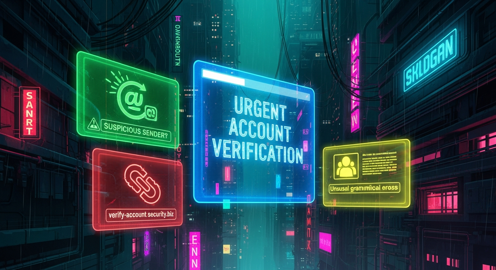

In the relentless digital landscape, where our lives are increasingly intertwined with online accounts, the specter of cybercrime looms large. Among the most pervasive and insidious threats is the "Urgent Account Verification" scam – a sophisticated form of phishing designed to exploit human psychology and technical vulnerabilities. These fraudulent emails masquerade as legitimate communications from banks, social media platforms, email providers, or other trusted services, demanding immediate action to "verify" or "secure" an account. The underlying goal, however, is sinister: to trick recipients into divulging sensitive personal information, login credentials, or financial data, or to unwittingly download malware. The sheer volume and increasing sophistication of these attacks make discernment a critical skill for every internet user. This article will dissect the anatomy of such scams, focusing on three definitive signs that empower you to identify and neutralize these digital threats before they can inflict harm. Understanding these red flags is not just about avoiding a single scam; it's about cultivating a resilient cybersecurity mindset that safeguards your digital identity in an ever-evolving threat environment.
One of the most immediate and telling indicators of a fraudulent "Urgent Account Verification" email lies within the sender's details and the greeting used. Scammers invest significant effort into making their emails appear authentic at first glance, but a closer examination often reveals critical inconsistencies. The displayed sender name might be "PayPal Security" or "Your Bank," but the actual email address, when expanded or hovered over, will betray its true nature. Legitimate organizations use their official domain names, such as "service@paypal.com" or "noreply@yourbank.com." Scam emails, however, frequently employ a variety of deceptive tactics. These can include misspelled domains (e.g., "paypa1.com" instead of "paypal.com"), subdomains designed to look official (e.g., "security@update.paypal.xyz.com" where "paypal" is merely a subdomain of an unrelated domain), or completely unrelated, often obscure, email addresses (e.g., "account-verify-321@gmail.com"). The subtle alteration of a single letter or the addition of an extra digit can be incredibly effective in fooling a hurried or inattentive recipient, especially on mobile devices where full email addresses are often truncated. It is absolutely crucial to expand the sender details and meticulously inspect the *entire* email address, not just the display name. If the domain does not precisely match the official domain of the purported sender, it is almost certainly a scam.
Beyond the sender's address, the salutation or greeting within the email provides another critical clue. Authentic communications from reputable companies that manage your personal accounts will almost always address you by your specific name, such as "Dear [Your Name]," or "Hello [Your Name]." This personalization is a standard security measure and a professional courtesy, indicating that the sender has a verified relationship with you and access to your account details. Phishing emails, conversely, frequently resort to generic and impersonal greetings. Phrases like "Dear Customer," "Dear Account Holder," "Dear User," or even simply "Hello" without any personalized identifier are enormous red flags. Scammers often send out mass emails to vast lists of potential victims, many of whom they do not know personally. Therefore, they cannot personalize the greeting without risking using the wrong name, which would immediately expose the fraud. While there might be rare instances where a legitimate company sends a general announcement, an email demanding "urgent account verification" with an impersonal salutation is a near-certain indicator of a phishing attempt. The lack of personalization suggests that the sender doesn't genuinely know who you are, making any request for personal data highly suspicious. Always question why an entity that supposedly manages your sensitive account information would not address you by name. This simple yet powerful indicator, combined with a suspicious sender address, forms a formidable first line of defense against these pervasive digital threats.
Furthermore, the context surrounding the sender's identity can also be revealing. Consider whether the email aligns with your usual interactions with the purported sender. Do you typically receive urgent security notifications via email, or does the service primarily use in-app notifications or secure messaging within their official portal? A sudden, out-of-the-blue email demanding immediate action, especially if it deviates from established communication patterns, should raise immediate suspicion. Some sophisticated scammers might even attempt to "spoof" email addresses, making it appear as though the email genuinely originates from a legitimate domain. However, even in such cases, the content and subsequent links will often reveal the deception. Tools like DMARC, DKIM, and SPF records are designed to combat email spoofing, but not all email services fully implement or enforce them, meaning some spoofed emails can still slip through. Therefore, relying solely on the sender's apparent address is insufficient; it must be coupled with an analysis of the email's content and the overall context. If you receive an email from "Apple" but you don't own any Apple products, or from a bank where you don't hold an account, the sender's identity is clearly fraudulent, regardless of how convincing the display name might appear. The meticulous examination of the sender's true email address, combined with a critical assessment of the salutation and the relevance of the email to your personal accounts, provides a robust initial defense against falling victim to these pervasive and often costly scams.
Scammers are master manipulators of human psychology, and one of their most effective tools is the creation of a false sense of urgency and fear. The "Urgent Account Verification" scam excels in this regard, employing language designed to bypass rational thought and provoke an immediate, unthinking response. These emails are deliberately crafted to put recipients under immense pressure, often using alarmist phrases that suggest dire consequences if action is not taken "immediately." Common examples include warnings like "Your account will be suspended," "Your account has been compromised," "Immediate action required to prevent service interruption," "Failure to verify will result in account closure," or even threats of legal action or financial penalties. The intent behind such aggressive language is clear: to instill panic and prevent the recipient from taking the time to critically evaluate the email's legitimacy. When faced with the perceived threat of losing access to a crucial service or suffering a financial setback, many individuals will react impulsively, clicking on a malicious link or providing requested information without due diligence.
Legitimate organizations, while certainly concerned with security, rarely employ such extreme and coercive language in unsolicited emails. While they might issue warnings about unusual activity or require account updates, these communications are typically phrased professionally, provide clear reasons for the request, and offer multiple, secure methods for verification or action. More importantly, they provide a reasonable timeframe for action, rather than demanding "immediate" response within minutes or hours. A genuine security alert from a bank, for instance, might advise you to log into your account through their official website (which you access by typing the URL yourself, not clicking a link in the email) to review recent activity, or they might instruct you to call a verified customer service number. They will almost never threaten immediate suspension or closure without prior, less urgent warnings, and certainly not via a single, unsolicited email. The presence of overly dramatic, threatening, or time-sensitive language is a monumental red flag that should instantly trigger your suspicion. This psychological tactic is a hallmark of phishing attempts, aiming to exploit our natural inclination to protect our assets and avoid negative outcomes.
Furthermore, the coercive calls to action embedded within these emails are often designed to reinforce the sense of urgency. These often take the form of prominent buttons or hyperlinked text stating "Verify Your Account Now," "Click Here to Update," or "Confirm Your Identity." The visual prominence and directness of these calls to action are intended to make them irresistible, guiding the victim directly to the scammer's phishing site. The combination of threatening language and an immediate, clickable solution creates a powerful trap. It's essential to remember that any legitimate request for sensitive information or account action will direct you to a secure, official portal that you access independently, not through a link in an email. Even if the email appears to come from a trusted source, the moment it demands "urgent" action and threatens negative consequences for non-compliance, your internal alarm bells should be ringing. Take a deep breath, resist the urge to react immediately, and scrutinize the email for other signs of fraud. The psychological pressure applied by these scams is their most potent weapon, and recognizing this tactic is a crucial step in disarming the threat and protecting yourself from potential financial loss or identity theft. Always remember that legitimate entities prioritize your security and convenience, not your panic. Any communication that suggests otherwise is highly suspect and warrants extreme caution.
Perhaps the most critical and dangerous element of an "Urgent Account Verification" scam email is the presence of malicious links or suspicious attachments. These are the primary vectors through which scammers either steal your credentials or infect your device with malware. A legitimate email from a service provider might include links, but these will invariably direct you to their official, secure website. Phishing emails, however, embed links that appear legitimate but, upon closer inspection, lead to fraudulent websites designed to mimic the real thing. The golden rule here is: *never* click on a link in an unsolicited email, especially one demanding urgent action. Instead, if you suspect the email *might* be legitimate, always navigate directly to the service's official website by typing its URL into your browser or using a trusted bookmark. This bypasses any malicious links embedded in the email entirely.
To identify a malicious link without clicking it, you can perform a simple but effective check: hover your mouse cursor over the link (without clicking!). In most email clients and web browsers, this action will reveal the true destination URL, usually displayed in the bottom-left corner of the window or as a tooltip. Compare this revealed URL with the official website address of the purported sender. If there's any discrepancy – a different domain name, an unusual subdomain, extra characters, or a completely unrelated address (e.g., a short URL service like bit.ly or tinyurl when the company usually uses its own domain) – it's a clear indicator of a phishing attempt. For example, a link that displays "https://www.paypal.com/security" in the email but reveals "http://phishing-site.xyz/paypal-login" on hover is unequivocally fraudulent. Scammers often use sophisticated techniques to make these links look convincing, sometimes embedding the legitimate company's name within a fake domain (e.g., "paypal.login.secure-account.com" where "secure-account.com" is the actual malicious domain). Always look at the root domain, which is the part immediately before the first single slash after "https://" or "http://".
Beyond malicious links, suspicious attachments are another potent threat vector. "Urgent Account Verification" emails might instruct you to "download your updated terms and conditions" or "review your account statement" by opening an attached file. The danger here is that these attachments are often disguised malware. Common file types used in such attacks include executable files (.exe), compressed archives (.zip, .rar), JavaScript files (.js), Visual Basic scripts (.vbs), or even seemingly innocuous document types like PDFs (.pdf) or Word documents (.doc, .docx) that contain embedded macros designed to download and execute malicious code. Opening such an attachment can instantly compromise your computer, leading to ransomware infection, keyloggers that steal your keystrokes (including passwords), or other forms of spyware. Legitimate companies almost never send unsolicited account-related documents or requests for verification via email attachments, especially if they are critical to account security. They would instead direct you to log into your secure portal to access such documents. If an email, particularly one with other red flags, contains an unexpected attachment and demands you open it, consider it an extreme danger. Even if your antivirus software is up to date, it's always safer to err on the side of caution and simply delete the email without interacting with the attachment. The risks associated with clicking malicious links or opening suspicious attachments are severe, ranging from identity theft and financial fraud to complete system compromise, making vigilance against these elements absolutely paramount in your defense against phishing scams.
Humanize your text and bypass any AI detector instantly with Undetectable AI.
BYPASS AI DETECTION NOWUnderstanding the "Urgent Account Verification" scam goes beyond merely identifying its signs; it involves comprehending the intricate process by which cybercriminals construct these digital traps. These attacks are not random; they are meticulously planned and executed, leveraging a blend of social engineering, technological exploitation, and psychological manipulation. The scammer's journey typically begins with reconnaissance, where they gather information about potential targets. This might involve scraping email addresses from public directories, purchasing stolen data lists from the dark web, or exploiting data breaches. They often target services that are widely used, such as major banks, popular email providers, e-commerce giants, or social media platforms, because this increases the likelihood that a recipient will actually have an account with the purported sender, thereby making the scam more believable.
Once they have a target list, the next phase involves crafting the phishing email itself. This is where the social engineering aspect comes into full play. Scammers study the branding, logos, and communication styles of legitimate organizations to create highly convincing replicas. They often use high-resolution images of company logos, mimic official email templates, and even adopt similar font styles and color schemes. The subject lines are carefully chosen to evoke a sense of urgency or curiosity, such as "Account Alert: Immediate Action Required," "Security Notification," or "Your Account is on Hold." The body text is then written to reinforce this urgency, using the threatening language and coercive calls to action discussed earlier. They often include subtle errors in grammar or spelling, not always due to oversight, but sometimes intentionally to bypass spam filters that might flag perfectly written English as suspicious, or to weed out more astute targets, focusing on those less likely to spot the flaws.
Technologically, scammers employ several tools to facilitate their attacks. Email spoofing software allows them to falsify the sender's address, making it appear as though the email originates from a legitimate source. They also set up sophisticated phishing websites that are near-perfect clones of official login pages. These sites are hosted on compromised servers or newly registered domains that are designed to look very similar to the legitimate ones (e.g., adding a hyphen or a number, or using a different top-level domain). When a victim clicks a malicious link, they are redirected to this fake site. Any credentials entered there are immediately harvested by the scammer, who can then use them to access the victim's real account. These phishing kits, as they are called, are often readily available on dark web forums, making it relatively easy for even less technically skilled individuals to launch sophisticated attacks. Furthermore, some attacks involve embedding malicious code within attachments or directly into the email's HTML, which, if opened or rendered, can exploit vulnerabilities in email clients or operating systems to install malware.
The final stages involve deployment and harvesting. Scammers send out these emails in massive waves, often using botnets (networks of compromised computers) to distribute them, making it difficult to trace the origin. They then monitor their phishing sites for incoming credentials or data. Once they obtain access to an account, they can quickly change passwords, transfer funds, make unauthorized purchases, or steal personal data for identity theft. The iterative nature of these attacks means that scammers constantly refine their techniques, adapting to new security measures and user awareness. They learn from successful campaigns and modify their approaches based on what gets past spam filters and what tricks users. This continuous evolution underscores the critical need for ongoing education and vigilance from internet users. By understanding the full lifecycle and the tools employed in a phishing attack, individuals can better anticipate and defend against these pervasive threats, recognizing that what appears to be a simple email is often the culmination of a sophisticated and malicious design.
Combating the "Urgent Account Verification" scam requires a multi-layered approach, blending proactive defensive strategies with effective reactive measures should you unfortunately fall victim. The digital security ecosystem offers a robust suite of tools and practices that, when consistently applied, significantly reduce your vulnerability to phishing attacks and mitigate their potential impact. The first line of defense often resides within your email service itself. Modern email providers like Gmail, Outlook, and ProtonMail incorporate advanced spam filters and phishing detection algorithms. These systems analyze incoming emails for suspicious patterns, known malicious links, and sender reputation, often moving questionable emails directly to a spam or junk folder. While highly effective, these filters are not infallible, making personal vigilance essential. Enhancing this, technologies like DMARC (Domain-based Message Authentication, Reporting & Conformance), DKIM (DomainKeys Identified Mail), and SPF (Sender Policy Framework) are email authentication protocols that help verify the sender's identity and prevent email spoofing. Ensuring your email provider supports and utilizes these can add an extra layer of protection.
Beyond email infrastructure, personal cybersecurity tools play a pivotal role. A reputable antivirus and anti-malware software suite is indispensable. Programs like Bitdefender, Norton, McAfee, or Malwarebytes offer real-time protection, scanning incoming files and links for known threats and blocking malicious activity. Regular, full-system scans are also crucial for detecting any threats that might have slipped through initial defenses. Your web browser also acts as a critical security gate. Modern browsers like Chrome, Firefox, Edge, and Safari include built-in phishing and malware protection (e.g., Google Safe Browsing, Microsoft SmartScreen) that warn you before you visit known malicious websites. Keeping your browser, operating system, and all software applications updated is paramount, as these updates often include patches for newly discovered security vulnerabilities that scammers might exploit. Browser extensions, such as ad blockers and specific security add-ons, can further enhance protection by preventing malicious scripts from running or blocking access to dangerous sites.
Perhaps one of the most powerful tools against credential-stealing phishing attacks is Multi-Factor Authentication (MFA) or Two-Factor Authentication (2FA). This security measure requires a second form of verification beyond just a password, such as a code sent to your phone, a fingerprint scan, or a hardware security key. Even if a scammer manages to steal your password through a phishing attempt, MFA prevents them from accessing your account without that second factor. Implementing MFA on all your critical accounts (email, banking, social media, cloud services) is arguably the single most effective step you can take to protect yourself. Complementing MFA, password managers (e.g., LastPass, 1Password, Bitwarden) not only help you create and store strong, unique passwords for every account but also offer a crucial anti-phishing benefit: they will only autofill credentials on legitimate websites. If you land on a fake phishing site, your password manager will not offer to autofill, serving as an immediate red flag.
Finally, education and reporting are vital. User awareness training, whether formal or self-taught, is the cornerstone of defense. Understanding the signs of phishing, as discussed in this article, empowers you to make informed decisions. If you do encounter a phishing email, do not just delete it. Report it to your email provider (most have a "Report Phishing" option), and if it pertains to a specific company (e.g., your bank), forward it to their dedicated abuse email address (often found on their official website). You can also report phishing attempts to national cybersecurity authorities like the Anti-Phishing Working Group (APWG) or the Federal Trade Commission (FTC) in the U.S. If, despite all precautions, you accidentally click a malicious link or provide information, immediate action is crucial: change affected passwords,... and implement these strategies to ensure long-term success.
In summary, staying ahead of these trends is the key to business longevity and security. By following this guide, you maximize your growth and ensure a stable digital future.
Don't wait for the headlines. Our Private Telegram Channel delivers real-time AI security updates and digital wealth strategies before they go viral. Stay protected. Stay ahead.
⚡ JOIN THE 1% NOW